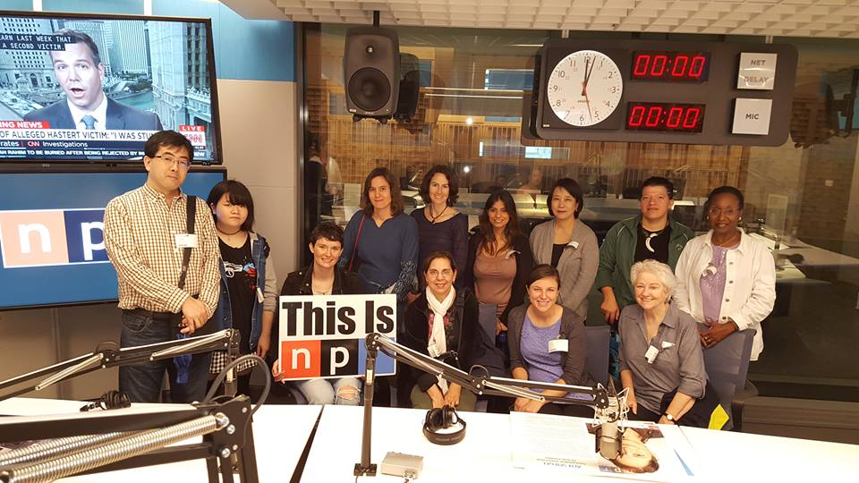
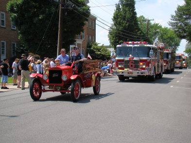

Every Friday, one of our instructors leads a tour to a Washington, DC area tourist attraction. Come with us to visit some of the world’s finest tourist destinations. Most museums in Washington offer free admission, so the only expense is the cost of Metro transportation and souvenirs.
English Now! groups visit the U.S. Capitol Visitors' Center, the Air & Space Museum, the Mall, the National Archives, less common destinations such as Voice of America and the Newseum, the National Postal Museum, and many others. Watch our Facebook page to see where we have been and where we are going. Your family members are welcome to join us, as are alumni!
Ask us about special destinations such as the National Public Radio (NPR) studios pictured to the left. Our visits to NPR, the National Institutes of Health, and university campuses such as the University of Maryland-College Park offer distinctive aspects of an engaging experience in the United States.
Each year we welcome students and their families, as well as members of our team, to our annual Memorial Day barbecue in Falls Church, Virginia. All are welcome to eat traditional American foods, converse with other students and teachers, and celebrate Memorial Day.
We organize an enjoyable day trip on the Potomac River each October. Students and their families may drive to a picnic lunch at Fletcher’s Boathouse in Northwest Washington, D.C., or many students opt to bike on the Capital Crescent Trail five miles into Washington, D.C., to the picnic. After lunch many try kayaking on the Potomac River. You’ll be amazed at what a great experience this can be, so close to downtown Washington, D.C.
Every Thanksgiving we host a lunch at English Now! Please join us for food, friends, and fun this coming Thanksgiving!
We hope you can join us for future special events! Sharing food is a wonderful way to learn about each other. Check out our International Cookbook with recipes from our students!
Contact us to learn more about activities at the school. Also, if you are planning to enroll, an outing might be a great way to learn about the school and how it works. Ask about joining us at an activity coming up soon!